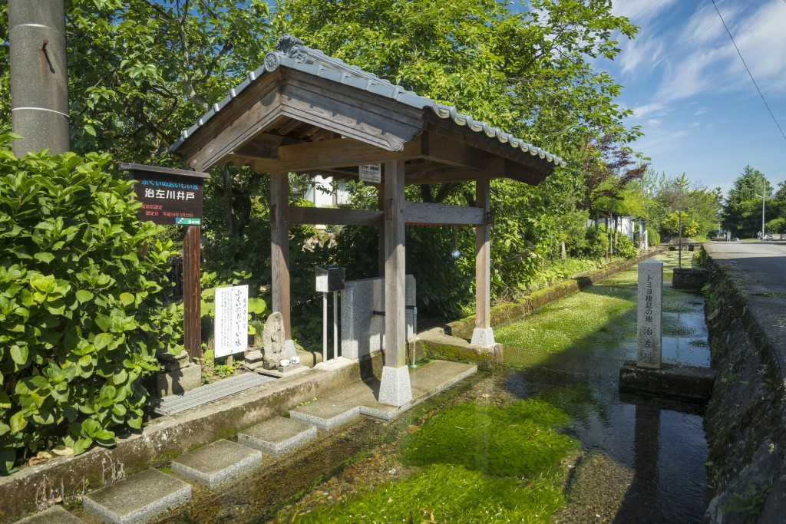

あ ： 藻に咲く 梅花藻 きれいな川に 白い花
一言でいうと？
清水にしか咲かない藻に咲く白い花
清水にしか咲かないといわれるめずらしい水中花。
梅の花に似た花を藻に咲かせるので「梅花藻」と書き、「ばいかも」と読みます。
どんな花？
育つ条件がむずかしい⁉
梅花藻はキンポウゲ科の水草で、藻に咲くめずらしい花です。水中から1センチほど白い花をのぞかせています。
育つ条件がむずかしく
①水温が14℃前後
②常に水の流れがある清らかな水
なので、種類によっては絶滅危惧種(ぜつめつきぐしゅ)に指定されています。
花言葉は「幸福になります」だそうです。
白くて可憐な姿にぴったりですね！
どこで見られるの？
治左川(じさがわ)

味真野地区を流れる治佐川は県内きっての清流で、6月下旬から8月いっぱいにかけて梅花藻の花が咲きます。
治左川上流には、水源である湧き水を汲み上げている井戸があり、井戸水は「ふくいのおいしい水」の認定を受けています。
場所：越前市上真柄町
(せまい路地から入るので注意！)
福井は水がきれいでおいしいとよく言われますが、梅花藻のような花があるとは知りませんでした！時期が過ぎてしまっていたのでこの「越前かるた」の制作時は見ることができませんでしたが、いつか実物を見てみたいです！